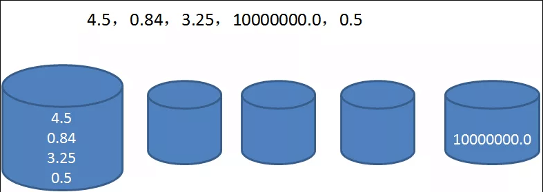
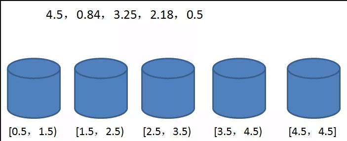
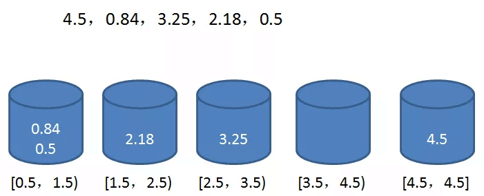

桶排序
桶排序 是计数排序的升级版。 它利用了函数的映射关系，高效与否的关键就在于这个映射函数的确定。
桶排序 (Bucket sort)的工作的原理： 假设输入数据服从均匀分布，将数据分到有限数量的桶里，每个桶再分别排序（有可能再使用别的排序算法或是以递归方式继续使用桶排序进行排
算法描述
- 步骤1：人为设置一个BucketSize，作为每个桶所能放置多少个不同数值（例如当BucketSize==5时，该桶可以存放｛1,2,3,4,5｝这几种数字，但是容量不限，即可以存放100个3）；
- 步骤2：遍历输入数据，并且把数据一个一个放到对应的桶里去；
- 步骤3：对每个不是空的桶进行排序，可以使用其它排序方法，也可以递归使用桶排序；
- 步骤4：从不是空的桶里把排好序的数据拼接起来。
注意，如果递归使用桶排序为各个桶排序，则当桶数量为1时要手动减小BucketSize增加下一循环桶的数量，否则会陷入死循环，导致内存溢出。
图片演示

代码实现
package algorithm.sort;
import java.util.ArrayList;
import java.util.Arrays;
import java.util.List;
import java.util.stream.Collectors;
public class BucketSort {
public static void main(String[] args) {
int[] array = {1, 2, 9, 4, 6, 7, 8, 3, 0, 5, 7, 6};
System.out.println("原始数组：" + Arrays.toString(array));
System.out.println("排序后数组：" + Arrays.toString(BucketSort.bucketSort(array, 3)));
}
private static int[] bucketSort(int[] array, int buketSize) {
if (array.length < 2) {
return array;
}
int min = array[0], max = array[0];
for (int a : array) {
if (a < min) {
min = a;
}
if (a > max) {
max = a;
}
}
//求出桶的数量
int bucketCount = (max - min) / buketSize + 1;
List<Integer> originList = Arrays.stream(array).boxed().collect(Collectors.toList());
ArrayList<ArrayList<Integer>> bucketArr = new ArrayList<ArrayList<Integer>>(bucketCount);
for (int i = 0; i < bucketCount; i++) {
bucketArr.add(new ArrayList<Integer>());
}
for (int i = 0; i < array.length; i++) {
bucketArr.get((originList.get(i) - min) / buketSize)
.add(originList.get(i));
}
int index = 0;
for (ArrayList<Integer> bucket : bucketArr) {
//这里应该桶内排序
for (int b : bucket) {
array[index++] = b;
}
}
return array;
}
}
算法分析
桶排序最好情况下使用线性时间O(n)，桶排序的时间复杂度，取决与对各个桶之间数据进行排序的时间复杂度，因为其它部分的时间复杂度都为O(n)。很显然，桶划分的越小，各个桶之间的数据越少，排序所用的时间也会越少。但相应的空间消耗就会增大。
最佳情况：T(n) = O(n+k) 最差情况：T(n) = O(n+k) 平均情况：T(n) = O(n2)
假设原始数列有n个元素，分成m个桶（我们采用的分桶方式 m=n），平均每个桶的元素个数为n/m。
下面我们来逐步分析算法复杂度：
第一步求数列最大最小值，运算量为n。
第二步创建空桶，运算量为m。
第三步遍历原始数列，运算量为n。
第四步在每个桶内部做排序，由于使用了O（nlogn）的排序算法，所以运算量为 n/m log(n/m ) m。
第五步输出排序数列，运算量为n。
加起来，总的运算量为 3n+m+ n/m log(n/m ) m = 3n+m+n(logn-logm) 。
去掉系数，时间复杂度为：
O(n+m+n(logn-logm)）
至于空间复杂度就很明显了：
空桶占用的空间 + 数列在桶中占用的空间 = O（m+n）。
桶排序在性能上并非绝对稳定。理想情况下，桶中的元素分布均匀，当 n = m时，时间复杂度可以达到O(n).
但是，如果桶内元素的分布极不均衡，极端情况下第一个桶中有n-1个元素，最后一个桶中有1个元素。此时的时间复杂度退化到O(nlogn)，还白白创建了许多空桶。

桶的概念
每一个桶（bucket）代表一个区间范围，里面可以承载一个或多个元素。桶排序的第一步，就是创建这些桶，确定每一个桶的区间范围：  具体建立多少个桶，如何确定桶的区间范围，有很多不同的方式。我们这里创建的桶数量等于原始数列的元素数量，除了最后一个桶只包含数列最大值，前面各个桶的区间按照比例确定。
区间跨度 = （最大值-最小值）/ （桶的数量 - 1）
第二步，遍历原始数列，把元素对号入座放入各个桶中：

第三步，每个桶内部的元素分别排序（显然，只有第一个桶需要排序）
第四步，遍历所有的桶，输出所有元素：
0.5，0.84，2.18，3.25，4.5
到此为止，排序结束。